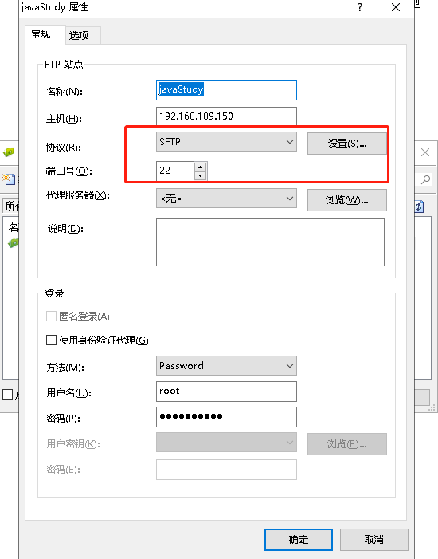
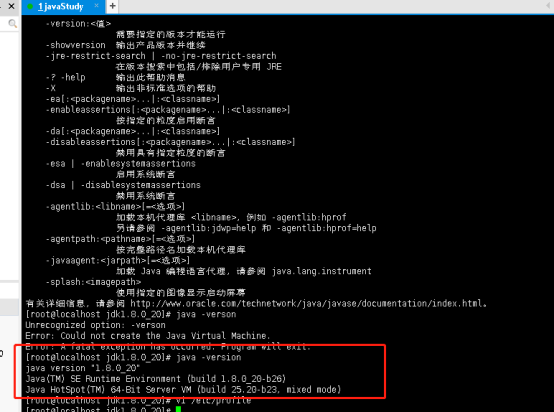

我这里是使用的jdk1.8；由于vmware上的字体太小，所以我使用xShell链接linux系统进行操作的。
准备工作：使用xftp链接linux系统；然后创建个包将linux版本的jdk上传上去；
注意红线框内的协议要改为sftp，端口为22；

上传成功后，在xshell对应的目录下即可找到上传的jdk jar包；
正式开始安装jdk：
1.解压jdk文件：tar -zxvf jdk-8u20-linux-x64.tar.gz
2.将解压后的文件copy到usr/local/java文件夹下，若没有，可以使用mkdir java在local文件夹下新建java文件夹；
copy的命令行：cp -r jdk1.8.0_20/ /usr/local/java
3.修改环境变量 vi /etc/profile
4.配置环境变量 在文件最后添加：
export JAVA_HOME=/usr/local/java/jdk1.8.0_20/
export CLASSPATH=.:${JAVA_HOME}/jre/lib/rt.jar:${JAVA_HOME}/lib/dt.jar:${JAVA_HOME}/lib/tools.jar
export PATH=$PATH:${JAVA_HOME}/bin;
export JAVA_HOME=/usr/local/java/jdk1.8.0_20/这个路径根据自己的路径修修改。
5.修改让其生效 source /etc/profile；最后可以输入java -version查看是否配置成功

可以看到我这里已经有了java的版本了，说明已经配置成功！